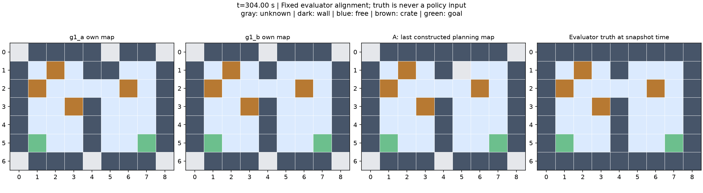
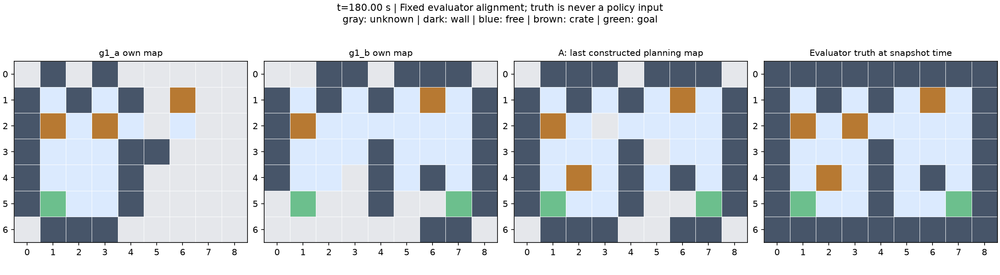
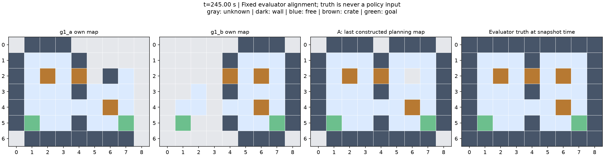
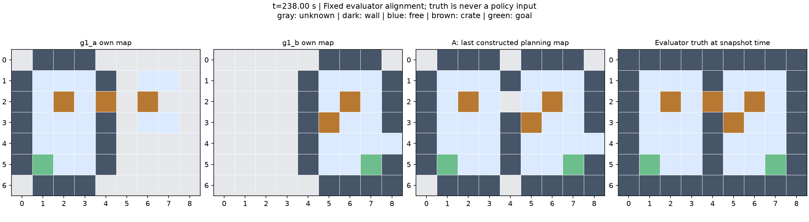
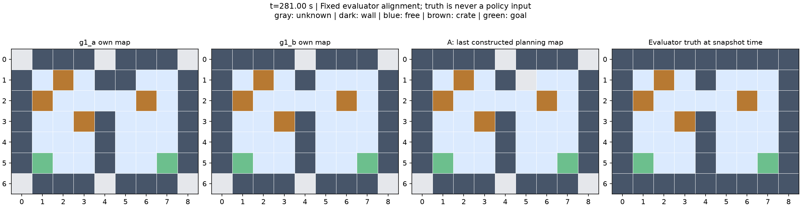
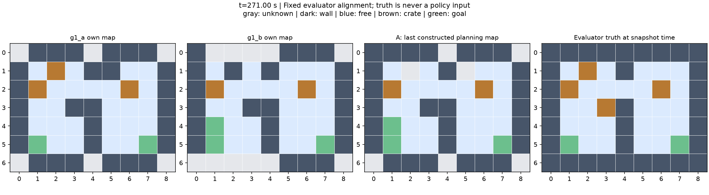

IMPLEMENTATION EVIDENCE · 2026-10-28T17:37:45.964288-04:00
Sokoban · 专家执行与逐项证据
当前版本完整见证：1 / 6。旧版零推箱绕行对照单独保留，不计入新版瓶颈验证。
每个实例按同一条证据链审阅：专家解、高/低层规划、对应实测轨迹、物理检查和视频。失败尝试保留，完整见证仅在各项检查实际通过后标注。
这是作者构造的开发验证集。策略只接收自身 RGB、本体感知和允许的消息；轨迹图与视频是评测视角。原生逻辑观测隔离不等于双容器验收；task_success=null，formal_admission=false。
完整轨迹 NPZ 包含每个控制步的双机关节目标、实测关节与物体位姿；接触审查覆盖 0.0025 秒求解子步。
逐项状态
| Case | Job | Status | High / low | Simulated s |
|---|---|---|---|---|
| L1 · 固定开发图 | 8051236 | 已到达双目标，见独立审查 | 24 / 75 | 304.38 |
| L2 · 信息互补 | 8051202 | 非当前目标箱发生位移 | 14 / 55 | 180.3 |
| L2 · 共享瓶颈与替代路径 | 8051358 | 动作超时 | 13 / 43 | 245.14 |
| L2 · 动态地图更新 | 8050587 | 动作超时 | 12 / 34 | 238.22 |
| L3 · A 的手臂力矩上限降低 | 8051455 | 完整见证（限定自动检查范围） | 24 / 76 | 281.16 |
| L3 · B 的手臂力矩上限降低 | 8051238 | 关节力矩或速度超限 | 22 / 70 | 271.98 |
L1 · 固定开发图
已到达双目标，见独立审查 · Job 8051236
尚未获得完整专家见证；以下为保留的实际执行证据。
最新尝试：8051236 · 已到达双目标，见独立审查 · Retain confirmed RGB obstacles until explicit push moves occupancy; may retain false positives; thresholds unchanged
High/low plan JSON · Full control trajectory NPZ · Trajectory schema · Substep physics review · Map evaluation · Evidence and hashes · Frozen expert task source


全局建图诊断
| Map | Coverage | Known-cell accuracy | Free precision | Free recall |
|---|---|---|---|---|
| g1_a / local | 90.5% | 98.2% | 100.0% | 96.3% |
| g1_a / last_agent_planning_map | 90.5% | 100.0% | 100.0% | 96.3% |
| g1_b / local | 90.5% | 100.0% | 100.0% | 100.0% |
未知格不计为空地；已知格准确率必须结合覆盖率阅读。规划地图只评估 agent 实际构建的版本。
| Physical check | Result |
|---|---|
| complete_substep_coverage | True |
| robot_stability | True |
| crate_support_and_tilt | True |
| peer_contact | True |
| actuator_limits | True |
| historical_nonhand_duration | True |
| no_opposed_hand_faces | False |
真实物理子步：121752 · dt=0.0025 s · body contact >10 N: 0.5375 s
Opposed-contact times, links and force vectors
| Crate | Interval (s) | Flagged substeps |
|---|---|---|
| crate_d | 77.3950–77.4025 | 3 |
| crate_d | 77.4125–77.4250 | 5 |
| crate_d | 77.4350–77.4425 | 3 |
高层动作 → 低层段 → 实测后置条件
| Action | Kind | Direction | Time (s) | Low-level segments | Measured pass |
|---|---|---|---|---|---|
| g1_a-action-1 | walk | [0, -1] | [10.24, 16.82] | segment_6 | True |
| g1_b-action-2 | walk | [0, -1] | [23.96, 30.26] | segment_9 | True |
| g1_b-action-3 | walk | [1, 0] | [37.04, 43.54] | segment_12 | True |
| g1_b-action-4 | walk | [1, 0] | [43.58, 48.26] | segment_14 | True |
| g1_b-action-5 | walk | [0, 1] | [48.300000000000004, 55.2] | segment_16 | True |
| g1_a-action-6 | push | [1, 0] | [55.22, 82.48] | segment_18, segment_19, segment_20, segment_21, segment_22, segment_23, segment_24 | True |
| g1_a-action-7 | push | [0, 1] | [82.48, 119.48] | segment_25, segment_26, segment_27, segment_28, segment_29, segment_30, segment_31 | True |
| g1_a-action-8 | walk | [1, 0] | [119.48, 125.78] | segment_32 | True |
| g1_a-action-9 | walk | [0, 1] | [125.78, 132.88] | segment_33 | True |
| g1_b-action-10 | push | [1, 0] | [132.9, 156.52] | segment_35, segment_36, segment_37, segment_38, segment_39, segment_40, segment_41 | True |
| g1_b-action-11 | push | [1, 0] | [156.58, 178.24] | segment_43, segment_44, segment_45, segment_46, segment_47, segment_48, segment_49 | True |
| g1_b-action-12 | push | [1, 0] | [178.3, 224.04] | segment_51, segment_52, segment_53, segment_54, segment_55, segment_56, segment_57 | True |
| g1_a-action-13 | walk | [0, -1] | [224.08, 232.58] | segment_59 | True |
| g1_a-action-14 | walk | [1, 0] | [232.58, 239.5] | segment_60 | True |
| g1_a-action-15 | walk | [1, 0] | [239.5, 244.46] | segment_61 | True |
| g1_a-action-16 | walk | [0, -1] | [244.46, 250.34] | segment_62 | True |
| g1_a-action-17 | walk | [1, 0] | [250.34, 256.22] | segment_63 | True |
| g1_a-action-18 | walk | [1, 0] | [256.22, 262.76] | segment_64 | True |
| g1_a-action-19 | walk | [0, -1] | [262.76, 268.58] | segment_65 | True |
| g1_a-action-20 | walk | [0, -1] | [268.58, 272.9] | segment_66 | True |
| g1_b-action-21 | walk | [0, 1] | [272.94, 280.46] | segment_68 | True |
| g1_b-action-22 | walk | [1, 0] | [280.52, 288.38] | segment_70 | True |
| g1_b-action-23 | walk | [0, 1] | [288.44, 294.54] | segment_72 | True |
| g1_b-action-24 | walk | [0, 1] | [294.6, 299.88] | segment_74 | True |
完整低层规划与轨迹区间
| Segment | Robot | Phase | Time (s) | Controller guard |
|---|---|---|---|---|
| segment_1 | g1_a | initialize | [0.0, 2.0] | Initial 2 s before scanning; zero yaw command. |
| segment_2 | g1_b | initialize | [0.0, 2.0] | Initial 2 s before scanning; zero yaw command. |
| segment_3 | g1_a | scan | [2.0, 10.24] | Own unwrapped yaw completes a turn; 30 s scan timeout. |
| segment_4 | g1_b | scan | [2.0, 9.94] | Own unwrapped yaw completes a turn; 30 s scan timeout. |
| segment_5 | g1_b | wait | [9.94, 23.96] | Position/heading hold; at the observed own goal, zero velocity with own-IMU hip trim. |
| segment_6 | g1_a | walk | [10.24, 16.82] | Normally <0.13 m and <0.16 rad; settled-walk handoff permits <0.18 m after 15 s at estimated speed <0.02 m/s. |
| segment_7 | g1_a | scan | [16.82, 23.94] | Own unwrapped yaw completes a turn; 30 s scan timeout. |
| segment_8 | g1_a | wait | [23.94, 55.22] | Position/heading hold; at the observed own goal, zero velocity with own-IMU hip trim. |
| segment_9 | g1_b | walk | [23.96, 30.26] | Normally <0.13 m and <0.16 rad; settled-walk handoff permits <0.18 m after 15 s at estimated speed <0.02 m/s. |
| segment_10 | g1_b | scan | [30.26, 37.0] | Own unwrapped yaw completes a turn; 30 s scan timeout. |
| segment_11 | g1_b | wait | [37.0, 37.04] | Position/heading hold; at the observed own goal, zero velocity with own-IMU hip trim. |
| segment_12 | g1_b | walk | [37.04, 43.54] | Normally <0.13 m and <0.16 rad; settled-walk handoff permits <0.18 m after 15 s at estimated speed <0.02 m/s. |
| segment_13 | g1_b | wait | [43.54, 43.58] | Position/heading hold; at the observed own goal, zero velocity with own-IMU hip trim. |
| segment_14 | g1_b | walk | [43.58, 48.26] | Normally <0.13 m and <0.16 rad; settled-walk handoff permits <0.18 m after 15 s at estimated speed <0.02 m/s. |
| segment_15 | g1_b | wait | [48.26, 48.300000000000004] | Position/heading hold; at the observed own goal, zero velocity with own-IMU hip trim. |
| segment_16 | g1_b | walk | [48.300000000000004, 55.2] | Normally <0.13 m and <0.16 rad; settled-walk handoff permits <0.18 m after 15 s at estimated speed <0.02 m/s. |
| segment_17 | g1_b | wait | [55.2, 132.9] | Position/heading hold; at the observed own goal, zero velocity with own-IMU hip trim. |
| segment_18 | g1_a | align | [55.22, 58.84] | Target 0.95 m behind the visually tracked crate; <0.13 m position and <0.16 rad heading error. |
| segment_19 | g1_a | arms | [58.84, 61.84] | 3 s blend; height command ramps 0.72 to 0.65 m; visual anchor corrections restricted to <0.25 m. |
| segment_20 | g1_a | push | [61.84, 73.22] | Forward command 0.18 m/s, lateral correction capped at 0.08 m/s; stop at estimated remaining distance <0.06 m; stale tracking >1 s stops translation. |
| segment_21 | g1_a | retract | [73.22, 74.36] | Backward command 0.30 m/s; release after >0.20 m estimated retreat OR fresh RGB (<0.3 s) and own-FK clearance >0.08 m. |
| segment_22 | g1_a | settle_retract | [74.36, 75.38] | 1 s at zero commanded velocity and 0.65 m height command. |
| segment_23 | g1_a | lower_arms | [75.38, 78.4] | 3 s blend; height command ramps 0.65 to 0.72 m. |
| segment_24 | g1_a | center | [78.4, 82.48] | Post-push robot subgoal: <0.13 m position and <0.16 rad heading error. |
| segment_25 | g1_a | align | [82.48, 84.52] | Target 0.95 m behind the visually tracked crate; <0.13 m position and <0.16 rad heading error. |
| segment_26 | g1_a | arms | [84.52, 87.54] | 3 s blend; height command ramps 0.72 to 0.65 m; visual anchor corrections restricted to <0.25 m. |
| segment_27 | g1_a | push | [87.54, 104.12] | Forward command 0.18 m/s, lateral correction capped at 0.08 m/s; stop at estimated remaining distance <0.06 m; stale tracking >1 s stops translation. |
| segment_28 | g1_a | retract | [104.12, 105.48] | Backward command 0.30 m/s; release after >0.20 m estimated retreat OR fresh RGB (<0.3 s) and own-FK clearance >0.08 m. |
| segment_29 | g1_a | settle_retract | [105.48, 106.5] | 1 s at zero commanded velocity and 0.65 m height command. |
| segment_30 | g1_a | lower_arms | [106.5, 109.52] | 3 s blend; height command ramps 0.65 to 0.72 m. |
| segment_31 | g1_a | center | [109.52, 119.48] | Post-push robot subgoal: <0.13 m position and <0.16 rad heading error. |
| segment_32 | g1_a | walk | [119.48, 125.78] | Normally <0.13 m and <0.16 rad; settled-walk handoff permits <0.18 m after 15 s at estimated speed <0.02 m/s. |
| segment_33 | g1_a | walk | [125.78, 132.88] | Normally <0.13 m and <0.16 rad; settled-walk handoff permits <0.18 m after 15 s at estimated speed <0.02 m/s. |
| segment_34 | g1_a | wait | [132.88, 224.08] | Position/heading hold; at the observed own goal, zero velocity with own-IMU hip trim. |
| segment_35 | g1_b | align | [132.9, 134.88] | Target 0.95 m behind the visually tracked crate; <0.13 m position and <0.16 rad heading error. |
| segment_36 | g1_b | arms | [134.88, 137.88] | 3 s blend; height command ramps 0.72 to 0.65 m; visual anchor corrections restricted to <0.25 m. |
| segment_37 | g1_b | push | [137.88, 148.22] | Forward command 0.18 m/s, lateral correction capped at 0.08 m/s; stop at estimated remaining distance <0.06 m; stale tracking >1 s stops translation. |
| segment_38 | g1_b | retract | [148.22, 149.66] | Backward command 0.30 m/s; release after >0.20 m estimated retreat OR fresh RGB (<0.3 s) and own-FK clearance >0.08 m. |
| segment_39 | g1_b | settle_retract | [149.66, 150.66] | 1 s at zero commanded velocity and 0.65 m height command. |
| segment_40 | g1_b | lower_arms | [150.66, 153.66] | 3 s blend; height command ramps 0.65 to 0.72 m. |
| segment_41 | g1_b | center | [153.66, 156.52] | Post-push robot subgoal: <0.13 m position and <0.16 rad heading error. |
| segment_42 | g1_b | wait | [156.52, 156.58] | Position/heading hold; at the observed own goal, zero velocity with own-IMU hip trim. |
| segment_43 | g1_b | align | [156.58, 156.78] | Target 0.95 m behind the visually tracked crate; <0.13 m position and <0.16 rad heading error. |
| segment_44 | g1_b | arms | [156.78, 159.78] | 3 s blend; height command ramps 0.72 to 0.65 m; visual anchor corrections restricted to <0.25 m. |
| segment_45 | g1_b | push | [159.78, 168.12] | Forward command 0.18 m/s, lateral correction capped at 0.08 m/s; stop at estimated remaining distance <0.06 m; stale tracking >1 s stops translation. |
| segment_46 | g1_b | retract | [168.12, 169.36] | Backward command 0.30 m/s; release after >0.20 m estimated retreat OR fresh RGB (<0.3 s) and own-FK clearance >0.08 m. |
| segment_47 | g1_b | settle_retract | [169.36, 170.36] | 1 s at zero commanded velocity and 0.65 m height command. |
| segment_48 | g1_b | lower_arms | [170.36, 173.36] | 3 s blend; height command ramps 0.65 to 0.72 m. |
| segment_49 | g1_b | center | [173.36, 178.24] | Post-push robot subgoal: <0.13 m position and <0.16 rad heading error. |
| segment_50 | g1_b | wait | [178.24, 178.3] | Position/heading hold; at the observed own goal, zero velocity with own-IMU hip trim. |
| segment_51 | g1_b | align | [178.3, 178.34] | Target 0.95 m behind the visually tracked crate; <0.13 m position and <0.16 rad heading error. |
| segment_52 | g1_b | arms | [178.34, 181.34] | 3 s blend; height command ramps 0.72 to 0.65 m; visual anchor corrections restricted to <0.25 m. |
| segment_53 | g1_b | push | [181.34, 213.72] | Forward command 0.18 m/s, lateral correction capped at 0.08 m/s; stop at estimated remaining distance <0.06 m; stale tracking >1 s stops translation. |
| segment_54 | g1_b | retract | [213.72, 215.0] | Backward command 0.30 m/s; release after >0.20 m estimated retreat OR fresh RGB (<0.3 s) and own-FK clearance >0.08 m. |
| segment_55 | g1_b | settle_retract | [215.0, 216.0] | 1 s at zero commanded velocity and 0.65 m height command. |
| segment_56 | g1_b | lower_arms | [216.0, 219.0] | 3 s blend; height command ramps 0.65 to 0.72 m. |
| segment_57 | g1_b | center | [219.0, 224.04] | Post-push robot subgoal: <0.13 m position and <0.16 rad heading error. |
| segment_58 | g1_b | wait | [224.04, 272.94] | Position/heading hold; at the observed own goal, zero velocity with own-IMU hip trim. |
| segment_59 | g1_a | walk | [224.08, 232.58] | Normally <0.13 m and <0.16 rad; settled-walk handoff permits <0.18 m after 15 s at estimated speed <0.02 m/s. |
| segment_60 | g1_a | walk | [232.58, 239.5] | Normally <0.13 m and <0.16 rad; settled-walk handoff permits <0.18 m after 15 s at estimated speed <0.02 m/s. |
| segment_61 | g1_a | walk | [239.5, 244.46] | Normally <0.13 m and <0.16 rad; settled-walk handoff permits <0.18 m after 15 s at estimated speed <0.02 m/s. |
| segment_62 | g1_a | walk | [244.46, 250.34] | Normally <0.13 m and <0.16 rad; settled-walk handoff permits <0.18 m after 15 s at estimated speed <0.02 m/s. |
| segment_63 | g1_a | walk | [250.34, 256.22] | Normally <0.13 m and <0.16 rad; settled-walk handoff permits <0.18 m after 15 s at estimated speed <0.02 m/s. |
| segment_64 | g1_a | walk | [256.22, 262.76] | Normally <0.13 m and <0.16 rad; settled-walk handoff permits <0.18 m after 15 s at estimated speed <0.02 m/s. |
| segment_65 | g1_a | walk | [262.76, 268.58] | Normally <0.13 m and <0.16 rad; settled-walk handoff permits <0.18 m after 15 s at estimated speed <0.02 m/s. |
| segment_66 | g1_a | walk | [268.58, 272.9] | Normally <0.13 m and <0.16 rad; settled-walk handoff permits <0.18 m after 15 s at estimated speed <0.02 m/s. |
| segment_67 | g1_a | wait | [272.9, 304.38] | Position/heading hold; at the observed own goal, zero velocity with own-IMU hip trim. |
| segment_68 | g1_b | walk | [272.94, 280.46] | Normally <0.13 m and <0.16 rad; settled-walk handoff permits <0.18 m after 15 s at estimated speed <0.02 m/s. |
| segment_69 | g1_b | wait | [280.46, 280.52] | Position/heading hold; at the observed own goal, zero velocity with own-IMU hip trim. |
| segment_70 | g1_b | walk | [280.52, 288.38] | Normally <0.13 m and <0.16 rad; settled-walk handoff permits <0.18 m after 15 s at estimated speed <0.02 m/s. |
| segment_71 | g1_b | wait | [288.38, 288.44] | Position/heading hold; at the observed own goal, zero velocity with own-IMU hip trim. |
| segment_72 | g1_b | walk | [288.44, 294.54] | Normally <0.13 m and <0.16 rad; settled-walk handoff permits <0.18 m after 15 s at estimated speed <0.02 m/s. |
| segment_73 | g1_b | wait | [294.54, 294.6] | Position/heading hold; at the observed own goal, zero velocity with own-IMU hip trim. |
| segment_74 | g1_b | walk | [294.6, 299.88] | Normally <0.13 m and <0.16 rad; settled-walk handoff permits <0.18 m after 15 s at estimated speed <0.02 m/s. |
| segment_75 | g1_b | wait | [299.88, 304.38] | Position/heading hold; at the observed own goal, zero velocity with own-IMU hip trim. |
L2 · 信息互补
非当前目标箱发生位移 · Job 8051202
尚未获得完整专家见证；以下为保留的实际执行证据。
最新尝试：8051202 · 非当前目标箱发生位移 · Conservative joint planning robot clearance after retained peer hand collision; thresholds unchanged
High/low plan JSON · Full control trajectory NPZ · Trajectory schema · Substep physics review · Map evaluation · Evidence and hashes · Frozen expert task source


全局建图诊断
| Map | Coverage | Known-cell accuracy | Free precision | Free recall |
|---|---|---|---|---|
| g1_a / local | 52.4% | 93.9% | 92.9% | 52.0% |
| g1_a / last_agent_planning_map | 82.5% | 100.0% | 100.0% | 88.0% |
| g1_b / local | 73.0% | 95.7% | 90.9% | 80.0% |
未知格不计为空地；已知格准确率必须结合覆盖率阅读。规划地图只评估 agent 实际构建的版本。
| Physical check | Result |
|---|---|
| complete_substep_coverage | True |
| robot_stability | True |
| crate_support_and_tilt | True |
| peer_contact | True |
| actuator_limits | True |
| historical_nonhand_duration | True |
| no_opposed_hand_faces | True |
真实物理子步：72120 · dt=0.0025 s · body contact >10 N: 0.275 s
高层动作 → 低层段 → 实测后置条件
| Action | Kind | Direction | Time (s) | Low-level segments | Measured pass |
|---|---|---|---|---|---|
| g1_a-action-1 | walk | [0, -1] | [10.700000000000001, 18.26] | segment_6 | True |
| g1_b-action-2 | walk | [0, 1] | [24.8, 30.98] | segment_9 | True |
| g1_b-action-3 | walk | [1, 0] | [38.36, 43.88] | segment_12 | True |
| g1_a-action-4 | walk | [0, -1] | [43.9, 48.46] | segment_14 | True |
| g1_a-action-5 | walk | [1, 0] | [48.46, 54.86] | segment_15 | True |
| g1_a-action-6 | walk | [1, 0] | [61.980000000000004, 67.46000000000001] | segment_17 | True |
| g1_a-action-7 | walk | [0, 1] | [67.46000000000001, 72.5] | segment_18 | True |
| g1_a-action-8 | walk | [0, 1] | [72.5, 77.54] | segment_19 | True |
| g1_b-action-9 | push | [0, -1] | [77.56, 98.74000000000001] | segment_21, segment_22, segment_23, segment_24, segment_25, segment_26, segment_27 | True |
| g1_b-action-10 | walk | [1, 0] | [98.78, 105.86] | segment_29 | True |
| g1_a-action-11 | push | [-1, 0] | [105.88, 131.62] | segment_31, segment_32, segment_33, segment_34, segment_35, segment_36, segment_37 | True |
| g1_b-action-12 | push | [1, 0] | [131.64000000000001, 156.46] | segment_39, segment_40, segment_41, segment_42, segment_43, segment_44, segment_45 | True |
| g1_a-action-13 | push | [0, -1] | [156.5, 177.8] | segment_47, segment_48, segment_49, segment_50, segment_51, segment_52, segment_53 | True |
| g1_b-action-14 | walk | [1, 0] | [177.82, 180.3] | segment_55 | incomplete |
完整低层规划与轨迹区间
| Segment | Robot | Phase | Time (s) | Controller guard |
|---|---|---|---|---|
| segment_1 | g1_a | initialize | [0.0, 2.0] | Initial 2 s before scanning; zero yaw command. |
| segment_2 | g1_b | initialize | [0.0, 2.0] | Initial 2 s before scanning; zero yaw command. |
| segment_3 | g1_a | scan | [2.0, 10.700000000000001] | Own unwrapped yaw completes a turn; 30 s scan timeout. |
| segment_4 | g1_b | scan | [2.0, 9.34] | Own unwrapped yaw completes a turn; 30 s scan timeout. |
| segment_5 | g1_b | wait | [9.34, 24.8] | Position/heading hold; at the observed own goal, zero velocity with own-IMU hip trim. |
| segment_6 | g1_a | walk | [10.700000000000001, 18.26] | Normally <0.13 m and <0.16 rad; settled-walk handoff permits <0.18 m after 15 s at estimated speed <0.02 m/s. |
| segment_7 | g1_a | scan | [18.26, 24.78] | Own unwrapped yaw completes a turn; 30 s scan timeout. |
| segment_8 | g1_a | wait | [24.78, 43.9] | Position/heading hold; at the observed own goal, zero velocity with own-IMU hip trim. |
| segment_9 | g1_b | walk | [24.8, 30.98] | Normally <0.13 m and <0.16 rad; settled-walk handoff permits <0.18 m after 15 s at estimated speed <0.02 m/s. |
| segment_10 | g1_b | scan | [30.98, 38.32] | Own unwrapped yaw completes a turn; 30 s scan timeout. |
| segment_11 | g1_b | wait | [38.32, 38.36] | Position/heading hold; at the observed own goal, zero velocity with own-IMU hip trim. |
| segment_12 | g1_b | walk | [38.36, 43.88] | Normally <0.13 m and <0.16 rad; settled-walk handoff permits <0.18 m after 15 s at estimated speed <0.02 m/s. |
| segment_13 | g1_b | wait | [43.88, 77.56] | Position/heading hold; at the observed own goal, zero velocity with own-IMU hip trim. |
| segment_14 | g1_a | walk | [43.9, 48.46] | Normally <0.13 m and <0.16 rad; settled-walk handoff permits <0.18 m after 15 s at estimated speed <0.02 m/s. |
| segment_15 | g1_a | walk | [48.46, 54.86] | Normally <0.13 m and <0.16 rad; settled-walk handoff permits <0.18 m after 15 s at estimated speed <0.02 m/s. |
| segment_16 | g1_a | scan | [54.86, 61.980000000000004] | Own unwrapped yaw completes a turn; 30 s scan timeout. |
| segment_17 | g1_a | walk | [61.980000000000004, 67.46000000000001] | Normally <0.13 m and <0.16 rad; settled-walk handoff permits <0.18 m after 15 s at estimated speed <0.02 m/s. |
| segment_18 | g1_a | walk | [67.46000000000001, 72.5] | Normally <0.13 m and <0.16 rad; settled-walk handoff permits <0.18 m after 15 s at estimated speed <0.02 m/s. |
| segment_19 | g1_a | walk | [72.5, 77.54] | Normally <0.13 m and <0.16 rad; settled-walk handoff permits <0.18 m after 15 s at estimated speed <0.02 m/s. |
| segment_20 | g1_a | wait | [77.54, 105.88] | Position/heading hold; at the observed own goal, zero velocity with own-IMU hip trim. |
| segment_21 | g1_b | align | [77.56, 79.72] | Target 0.95 m behind the visually tracked crate; <0.13 m position and <0.16 rad heading error. |
| segment_22 | g1_b | arms | [79.72, 82.74] | 3 s blend; height command ramps 0.72 to 0.65 m; visual anchor corrections restricted to <0.25 m. |
| segment_23 | g1_b | push | [82.74, 90.32000000000001] | Forward command 0.18 m/s, lateral correction capped at 0.08 m/s; stop at estimated remaining distance <0.06 m; stale tracking >1 s stops translation. |
| segment_24 | g1_b | retract | [90.32000000000001, 91.4] | Backward command 0.30 m/s; release after >0.20 m estimated retreat OR fresh RGB (<0.3 s) and own-FK clearance >0.08 m. |
| segment_25 | g1_b | settle_retract | [91.4, 92.42] | 1 s at zero commanded velocity and 0.65 m height command. |
| segment_26 | g1_b | lower_arms | [92.42, 95.44] | 3 s blend; height command ramps 0.65 to 0.72 m. |
| segment_27 | g1_b | center | [95.44, 98.74000000000001] | Post-push robot subgoal: <0.13 m position and <0.16 rad heading error. |
| segment_28 | g1_b | wait | [98.74000000000001, 98.78] | Position/heading hold; at the observed own goal, zero velocity with own-IMU hip trim. |
| segment_29 | g1_b | walk | [98.78, 105.86] | Normally <0.13 m and <0.16 rad; settled-walk handoff permits <0.18 m after 15 s at estimated speed <0.02 m/s. |
| segment_30 | g1_b | wait | [105.86, 131.64000000000001] | Position/heading hold; at the observed own goal, zero velocity with own-IMU hip trim. |
| segment_31 | g1_a | align | [105.88, 107.68] | Target 0.95 m behind the visually tracked crate; <0.13 m position and <0.16 rad heading error. |
| segment_32 | g1_a | arms | [107.68, 110.7] | 3 s blend; height command ramps 0.72 to 0.65 m; visual anchor corrections restricted to <0.25 m. |
| segment_33 | g1_a | push | [110.7, 121.72] | Forward command 0.18 m/s, lateral correction capped at 0.08 m/s; stop at estimated remaining distance <0.06 m; stale tracking >1 s stops translation. |
| segment_34 | g1_a | retract | [121.72, 122.24000000000001] | Backward command 0.30 m/s; release after >0.20 m estimated retreat OR fresh RGB (<0.3 s) and own-FK clearance >0.08 m. |
| segment_35 | g1_a | settle_retract | [122.24000000000001, 123.26] | 1 s at zero commanded velocity and 0.65 m height command. |
| segment_36 | g1_a | lower_arms | [123.26, 126.28] | 3 s blend; height command ramps 0.65 to 0.72 m. |
| segment_37 | g1_a | center | [126.28, 131.62] | Post-push robot subgoal: <0.13 m position and <0.16 rad heading error. |
| segment_38 | g1_a | wait | [131.62, 156.5] | Position/heading hold; at the observed own goal, zero velocity with own-IMU hip trim. |
| segment_39 | g1_b | align | [131.64000000000001, 131.66] | Target 0.95 m behind the visually tracked crate; <0.13 m position and <0.16 rad heading error. |
| segment_40 | g1_b | arms | [131.66, 134.66] | 3 s blend; height command ramps 0.72 to 0.65 m; visual anchor corrections restricted to <0.25 m. |
| segment_41 | g1_b | push | [134.66, 145.52] | Forward command 0.18 m/s, lateral correction capped at 0.08 m/s; stop at estimated remaining distance <0.06 m; stale tracking >1 s stops translation. |
| segment_42 | g1_b | retract | [145.52, 146.68] | Backward command 0.30 m/s; release after >0.20 m estimated retreat OR fresh RGB (<0.3 s) and own-FK clearance >0.08 m. |
| segment_43 | g1_b | settle_retract | [146.68, 147.68] | 1 s at zero commanded velocity and 0.65 m height command. |
| segment_44 | g1_b | lower_arms | [147.68, 150.68] | 3 s blend; height command ramps 0.65 to 0.72 m. |
| segment_45 | g1_b | center | [150.68, 156.46] | Post-push robot subgoal: <0.13 m position and <0.16 rad heading error. |
| segment_46 | g1_b | wait | [156.46, 177.82] | Position/heading hold; at the observed own goal, zero velocity with own-IMU hip trim. |
| segment_47 | g1_a | align | [156.5, 158.46] | Target 0.95 m behind the visually tracked crate; <0.13 m position and <0.16 rad heading error. |
| segment_48 | g1_a | arms | [158.46, 161.46] | 3 s blend; height command ramps 0.72 to 0.65 m; visual anchor corrections restricted to <0.25 m. |
| segment_49 | g1_a | push | [161.46, 168.12] | Forward command 0.18 m/s, lateral correction capped at 0.08 m/s; stop at estimated remaining distance <0.06 m; stale tracking >1 s stops translation. |
| segment_50 | g1_a | retract | [168.12, 168.62] | Backward command 0.30 m/s; release after >0.20 m estimated retreat OR fresh RGB (<0.3 s) and own-FK clearance >0.08 m. |
| segment_51 | g1_a | settle_retract | [168.62, 169.62] | 1 s at zero commanded velocity and 0.65 m height command. |
| segment_52 | g1_a | lower_arms | [169.62, 172.62] | 3 s blend; height command ramps 0.65 to 0.72 m. |
| segment_53 | g1_a | center | [172.62, 177.8] | Post-push robot subgoal: <0.13 m position and <0.16 rad heading error. |
| segment_54 | g1_a | wait | [177.8, 180.3] | Position/heading hold; at the observed own goal, zero velocity with own-IMU hip trim. |
| segment_55 | g1_b | walk | [177.82, 180.3] | Normally <0.13 m and <0.16 rad; settled-walk handoff permits <0.18 m after 15 s at estimated speed <0.02 m/s. |
L2 · 共享瓶颈与替代路径
动作超时 · Job 8051358
尚未获得完整专家见证；以下为保留的实际执行证据。
最新尝试：8051358 · 动作超时 · Clearance applies to joint plans and exploratory frontiers; obstacle memory enabled
High/low plan JSON · Full control trajectory NPZ · Trajectory schema · Substep physics review · Map evaluation · Evidence and hashes · Frozen expert task source


全局建图诊断
| Map | Coverage | Known-cell accuracy | Free precision | Free recall |
|---|---|---|---|---|
| g1_a / local | 73.0% | 100.0% | 100.0% | 85.7% |
| g1_a / last_agent_planning_map | 90.5% | 100.0% | 100.0% | 100.0% |
| g1_b / local | 55.6% | 100.0% | 100.0% | 64.3% |
未知格不计为空地；已知格准确率必须结合覆盖率阅读。规划地图只评估 agent 实际构建的版本。
| Physical check | Result |
|---|---|
| complete_substep_coverage | True |
| robot_stability | True |
| crate_support_and_tilt | True |
| peer_contact | True |
| actuator_limits | True |
| historical_nonhand_duration | True |
| no_opposed_hand_faces | True |
真实物理子步：98056 · dt=0.0025 s · body contact >10 N: 0.2425 s
高层动作 → 低层段 → 实测后置条件
| Action | Kind | Direction | Time (s) | Low-level segments | Measured pass |
|---|---|---|---|---|---|
| g1_a-action-1 | walk | [0, -1] | [10.4, 16.02] | segment_7 | True |
| g1_b-action-2 | walk | [0, -1] | [23.32, 29.76] | segment_10 | True |
| g1_a-action-3 | walk | [1, 0] | [37.1, 43.660000000000004] | segment_13 | True |
| g1_b-action-4 | walk | [1, 0] | [51.36, 57.620000000000005] | segment_16 | True |
| g1_a-action-5 | walk | [1, 0] | [63.86, 69.26] | segment_19 | True |
| g1_a-action-6 | walk | [0, -1] | [75.62, 84.04] | segment_21 | True |
| g1_b-action-7 | walk | [1, 0] | [84.06, 89.18] | segment_23 | True |
| g1_b-action-8 | walk | [0, 1] | [89.22, 95.78] | segment_25 | True |
| g1_a-action-9 | push | [1, 0] | [95.8, 120.98] | segment_27, segment_28, segment_29, segment_30, segment_31, segment_32, segment_33 | True |
| g1_a-action-10 | push | [1, 0] | [120.98, 141.26] | segment_34, segment_35, segment_36, segment_37, segment_38, segment_39, segment_40 | True |
| g1_a-action-11 | walk | [0, -1] | [141.26, 147.74] | segment_41 | True |
| g1_a-action-12 | walk | [1, 0] | [147.74, 155.12] | segment_42 | True |
| g1_a-action-13 | walk | [1, 0] | [155.12, 245.14000000000001] | segment_43 | incomplete |
完整低层规划与轨迹区间
| Segment | Robot | Phase | Time (s) | Controller guard |
|---|---|---|---|---|
| segment_1 | g1_a | initialize | [0.0, 2.0] | Initial 2 s before scanning; zero yaw command. |
| segment_2 | g1_b | initialize | [0.0, 2.0] | Initial 2 s before scanning; zero yaw command. |
| segment_3 | g1_a | scan | [2.0, 9.66] | Own unwrapped yaw completes a turn; 30 s scan timeout. |
| segment_4 | g1_b | scan | [2.0, 10.38] | Own unwrapped yaw completes a turn; 30 s scan timeout. |
| segment_5 | g1_a | wait | [9.66, 10.4] | Position/heading hold; at the observed own goal, zero velocity with own-IMU hip trim. |
| segment_6 | g1_b | wait | [10.38, 23.32] | Position/heading hold; at the observed own goal, zero velocity with own-IMU hip trim. |
| segment_7 | g1_a | walk | [10.4, 16.02] | Normally <0.13 m and <0.16 rad; settled-walk handoff permits <0.18 m after 15 s at estimated speed <0.02 m/s. |
| segment_8 | g1_a | scan | [16.02, 23.3] | Own unwrapped yaw completes a turn; 30 s scan timeout. |
| segment_9 | g1_a | wait | [23.3, 37.1] | Position/heading hold; at the observed own goal, zero velocity with own-IMU hip trim. |
| segment_10 | g1_b | walk | [23.32, 29.76] | Normally <0.13 m and <0.16 rad; settled-walk handoff permits <0.18 m after 15 s at estimated speed <0.02 m/s. |
| segment_11 | g1_b | scan | [29.76, 37.08] | Own unwrapped yaw completes a turn; 30 s scan timeout. |
| segment_12 | g1_b | wait | [37.08, 51.36] | Position/heading hold; at the observed own goal, zero velocity with own-IMU hip trim. |
| segment_13 | g1_a | walk | [37.1, 43.660000000000004] | Normally <0.13 m and <0.16 rad; settled-walk handoff permits <0.18 m after 15 s at estimated speed <0.02 m/s. |
| segment_14 | g1_a | scan | [43.660000000000004, 51.34] | Own unwrapped yaw completes a turn; 30 s scan timeout. |
| segment_15 | g1_a | wait | [51.34, 63.86] | Position/heading hold; at the observed own goal, zero velocity with own-IMU hip trim. |
| segment_16 | g1_b | walk | [51.36, 57.620000000000005] | Normally <0.13 m and <0.16 rad; settled-walk handoff permits <0.18 m after 15 s at estimated speed <0.02 m/s. |
| segment_17 | g1_b | scan | [57.620000000000005, 63.84] | Own unwrapped yaw completes a turn; 30 s scan timeout. |
| segment_18 | g1_b | wait | [63.84, 84.06] | Position/heading hold; at the observed own goal, zero velocity with own-IMU hip trim. |
| segment_19 | g1_a | walk | [63.86, 69.26] | Normally <0.13 m and <0.16 rad; settled-walk handoff permits <0.18 m after 15 s at estimated speed <0.02 m/s. |
| segment_20 | g1_a | scan | [69.26, 75.62] | Own unwrapped yaw completes a turn; 30 s scan timeout. |
| segment_21 | g1_a | walk | [75.62, 84.04] | Normally <0.13 m and <0.16 rad; settled-walk handoff permits <0.18 m after 15 s at estimated speed <0.02 m/s. |
| segment_22 | g1_a | wait | [84.04, 95.8] | Position/heading hold; at the observed own goal, zero velocity with own-IMU hip trim. |
| segment_23 | g1_b | walk | [84.06, 89.18] | Normally <0.13 m and <0.16 rad; settled-walk handoff permits <0.18 m after 15 s at estimated speed <0.02 m/s. |
| segment_24 | g1_b | wait | [89.18, 89.22] | Position/heading hold; at the observed own goal, zero velocity with own-IMU hip trim. |
| segment_25 | g1_b | walk | [89.22, 95.78] | Normally <0.13 m and <0.16 rad; settled-walk handoff permits <0.18 m after 15 s at estimated speed <0.02 m/s. |
| segment_26 | g1_b | wait | [95.78, 245.14000000000001] | Position/heading hold; at the observed own goal, zero velocity with own-IMU hip trim. |
| segment_27 | g1_a | align | [95.8, 98.8] | Target 0.95 m behind the visually tracked crate; <0.13 m position and <0.16 rad heading error. |
| segment_28 | g1_a | arms | [98.8, 101.82000000000001] | 3 s blend; height command ramps 0.72 to 0.65 m; visual anchor corrections restricted to <0.25 m. |
| segment_29 | g1_a | push | [101.82000000000001, 112.42] | Forward command 0.18 m/s, lateral correction capped at 0.08 m/s; stop at estimated remaining distance <0.06 m; stale tracking >1 s stops translation. |
| segment_30 | g1_a | retract | [112.42, 112.96000000000001] | Backward command 0.30 m/s; release after >0.20 m estimated retreat OR fresh RGB (<0.3 s) and own-FK clearance >0.08 m. |
| segment_31 | g1_a | settle_retract | [112.96000000000001, 113.98] | 1 s at zero commanded velocity and 0.65 m height command. |
| segment_32 | g1_a | lower_arms | [113.98, 117.0] | 3 s blend; height command ramps 0.65 to 0.72 m. |
| segment_33 | g1_a | center | [117.0, 120.98] | Post-push robot subgoal: <0.13 m position and <0.16 rad heading error. |
| segment_34 | g1_a | align | [120.98, 121.22] | Target 0.95 m behind the visually tracked crate; <0.13 m position and <0.16 rad heading error. |
| segment_35 | g1_a | arms | [121.22, 124.24000000000001] | 3 s blend; height command ramps 0.72 to 0.65 m; visual anchor corrections restricted to <0.25 m. |
| segment_36 | g1_a | push | [124.24000000000001, 133.12] | Forward command 0.18 m/s, lateral correction capped at 0.08 m/s; stop at estimated remaining distance <0.06 m; stale tracking >1 s stops translation. |
| segment_37 | g1_a | retract | [133.12, 133.74] | Backward command 0.30 m/s; release after >0.20 m estimated retreat OR fresh RGB (<0.3 s) and own-FK clearance >0.08 m. |
| segment_38 | g1_a | settle_retract | [133.74, 134.74] | 1 s at zero commanded velocity and 0.65 m height command. |
| segment_39 | g1_a | lower_arms | [134.74, 137.74] | 3 s blend; height command ramps 0.65 to 0.72 m. |
| segment_40 | g1_a | center | [137.74, 141.26] | Post-push robot subgoal: <0.13 m position and <0.16 rad heading error. |
| segment_41 | g1_a | walk | [141.26, 147.74] | Normally <0.13 m and <0.16 rad; settled-walk handoff permits <0.18 m after 15 s at estimated speed <0.02 m/s. |
| segment_42 | g1_a | walk | [147.74, 155.12] | Normally <0.13 m and <0.16 rad; settled-walk handoff permits <0.18 m after 15 s at estimated speed <0.02 m/s. |
| segment_43 | g1_a | walk | [155.12, 245.14000000000001] | Normally <0.13 m and <0.16 rad; settled-walk handoff permits <0.18 m after 15 s at estimated speed <0.02 m/s. |
L2 · 动态地图更新
动作超时 · Job 8050587
尚未获得完整专家见证；以下为保留的实际执行证据。
最新尝试：8051237 · 非当前目标箱发生位移 · Retain confirmed RGB obstacles until explicit push moves occupancy; may retain false positives; thresholds unchanged
High/low plan JSON · Full control trajectory NPZ · Trajectory schema · Substep physics review · Map evaluation · Evidence and hashes · Frozen expert task source


全局建图诊断
| Map | Coverage | Known-cell accuracy | Free precision | Free recall |
|---|---|---|---|---|
| g1_a / local | 57.1% | 100.0% | 100.0% | 66.7% |
| g1_a / last_agent_planning_map | 90.5% | 98.2% | 96.4% | 100.0% |
| g1_b / local | 50.8% | 96.9% | 92.9% | 48.1% |
未知格不计为空地；已知格准确率必须结合覆盖率阅读。规划地图只评估 agent 实际构建的版本。
| Physical check | Result |
|---|---|
| complete_substep_coverage | True |
| robot_stability | True |
| crate_support_and_tilt | True |
| peer_contact | True |
| actuator_limits | True |
| historical_nonhand_duration | True |
| no_opposed_hand_faces | True |
真实物理子步：95288 · dt=0.0025 s · body contact >10 N: 0.0 s
高层动作 → 低层段 → 实测后置条件
| Action | Kind | Direction | Time (s) | Low-level segments | Measured pass |
|---|---|---|---|---|---|
| g1_a-action-1 | walk | [0, -1] | [9.6, 16.72] | segment_7 | True |
| g1_b-action-2 | walk | [0, 1] | [23.5, 30.28] | segment_10 | True |
| g1_a-action-3 | walk | [1, 0] | [38.34, 44.78] | segment_13 | True |
| g1_a-action-4 | walk | [1, 0] | [44.78, 50.44] | segment_14 | True |
| g1_a-action-5 | walk | [0, 1] | [50.44, 55.38] | segment_15 | True |
| g1_b-action-6 | walk | [1, 0] | [55.4, 62.92] | segment_17 | True |
| g1_a-action-7 | walk | [0, -1] | [62.940000000000005, 71.12] | segment_19 | True |
| g1_b-action-8 | walk | [0, 1] | [78.4, 83.78] | segment_22 | True |
| g1_a-action-9 | walk | [0, 1] | [90.64, 99.60000000000001] | segment_25 | True |
| g1_b-action-10 | walk | [-1, 0] | [106.06, 114.56] | segment_28 | True |
| g1_a-action-11 | walk | [0, -1] | [121.78, 130.94] | segment_31 | True |
| g1_b-action-12 | walk | [-1, 0] | [148.20000000000002, 238.22] | segment_34 | incomplete |
完整低层规划与轨迹区间
| Segment | Robot | Phase | Time (s) | Controller guard |
|---|---|---|---|---|
| segment_1 | g1_a | initialize | [0.0, 2.0] | Initial 2 s before scanning; zero yaw command. |
| segment_2 | g1_b | initialize | [0.0, 2.0] | Initial 2 s before scanning; zero yaw command. |
| segment_3 | g1_a | scan | [2.0, 9.24] | Own unwrapped yaw completes a turn; 30 s scan timeout. |
| segment_4 | g1_b | scan | [2.0, 9.58] | Own unwrapped yaw completes a turn; 30 s scan timeout. |
| segment_5 | g1_a | wait | [9.24, 9.6] | Position/heading hold; at the observed own goal, zero velocity with own-IMU hip trim. |
| segment_6 | g1_b | wait | [9.58, 23.5] | Position/heading hold; at the observed own goal, zero velocity with own-IMU hip trim. |
| segment_7 | g1_a | walk | [9.6, 16.72] | Normally <0.13 m and <0.16 rad; settled-walk handoff permits <0.18 m after 15 s at estimated speed <0.02 m/s. |
| segment_8 | g1_a | scan | [16.72, 23.48] | Own unwrapped yaw completes a turn; 30 s scan timeout. |
| segment_9 | g1_a | wait | [23.48, 38.34] | Position/heading hold; at the observed own goal, zero velocity with own-IMU hip trim. |
| segment_10 | g1_b | walk | [23.5, 30.28] | Normally <0.13 m and <0.16 rad; settled-walk handoff permits <0.18 m after 15 s at estimated speed <0.02 m/s. |
| segment_11 | g1_b | scan | [30.28, 38.32] | Own unwrapped yaw completes a turn; 30 s scan timeout. |
| segment_12 | g1_b | wait | [38.32, 55.4] | Position/heading hold; at the observed own goal, zero velocity with own-IMU hip trim. |
| segment_13 | g1_a | walk | [38.34, 44.78] | Normally <0.13 m and <0.16 rad; settled-walk handoff permits <0.18 m after 15 s at estimated speed <0.02 m/s. |
| segment_14 | g1_a | walk | [44.78, 50.44] | Normally <0.13 m and <0.16 rad; settled-walk handoff permits <0.18 m after 15 s at estimated speed <0.02 m/s. |
| segment_15 | g1_a | walk | [50.44, 55.38] | Normally <0.13 m and <0.16 rad; settled-walk handoff permits <0.18 m after 15 s at estimated speed <0.02 m/s. |
| segment_16 | g1_a | wait | [55.38, 62.940000000000005] | Position/heading hold; at the observed own goal, zero velocity with own-IMU hip trim. |
| segment_17 | g1_b | walk | [55.4, 62.92] | Normally <0.13 m and <0.16 rad; settled-walk handoff permits <0.18 m after 15 s at estimated speed <0.02 m/s. |
| segment_18 | g1_b | wait | [62.92, 78.4] | Position/heading hold; at the observed own goal, zero velocity with own-IMU hip trim. |
| segment_19 | g1_a | walk | [62.940000000000005, 71.12] | Normally <0.13 m and <0.16 rad; settled-walk handoff permits <0.18 m after 15 s at estimated speed <0.02 m/s. |
| segment_20 | g1_a | scan | [71.12, 78.38] | Own unwrapped yaw completes a turn; 30 s scan timeout. |
| segment_21 | g1_a | wait | [78.38, 90.64] | Position/heading hold; at the observed own goal, zero velocity with own-IMU hip trim. |
| segment_22 | g1_b | walk | [78.4, 83.78] | Normally <0.13 m and <0.16 rad; settled-walk handoff permits <0.18 m after 15 s at estimated speed <0.02 m/s. |
| segment_23 | g1_b | scan | [83.78, 90.62] | Own unwrapped yaw completes a turn; 30 s scan timeout. |
| segment_24 | g1_b | wait | [90.62, 106.06] | Position/heading hold; at the observed own goal, zero velocity with own-IMU hip trim. |
| segment_25 | g1_a | walk | [90.64, 99.60000000000001] | Normally <0.13 m and <0.16 rad; settled-walk handoff permits <0.18 m after 15 s at estimated speed <0.02 m/s. |
| segment_26 | g1_a | scan | [99.60000000000001, 106.04] | Own unwrapped yaw completes a turn; 30 s scan timeout. |
| segment_27 | g1_a | wait | [106.04, 121.78] | Position/heading hold; at the observed own goal, zero velocity with own-IMU hip trim. |
| segment_28 | g1_b | walk | [106.06, 114.56] | Normally <0.13 m and <0.16 rad; settled-walk handoff permits <0.18 m after 15 s at estimated speed <0.02 m/s. |
| segment_29 | g1_b | scan | [114.56, 121.76] | Own unwrapped yaw completes a turn; 30 s scan timeout. |
| segment_30 | g1_b | wait | [121.76, 148.20000000000002] | Position/heading hold; at the observed own goal, zero velocity with own-IMU hip trim. |
| segment_31 | g1_a | walk | [121.78, 130.94] | Normally <0.13 m and <0.16 rad; settled-walk handoff permits <0.18 m after 15 s at estimated speed <0.02 m/s. |
| segment_32 | g1_a | scan | [130.94, 148.18] | Own unwrapped yaw completes a turn; 30 s scan timeout. |
| segment_33 | g1_a | wait | [148.18, 238.22] | Position/heading hold; at the observed own goal, zero velocity with own-IMU hip trim. |
| segment_34 | g1_b | walk | [148.20000000000002, 238.22] | Normally <0.13 m and <0.16 rad; settled-walk handoff permits <0.18 m after 15 s at estimated speed <0.02 m/s. |
L3 · A 的手臂力矩上限降低
完整见证（限定自动检查范围） · Job 8051455
已获得限定检查范围内的完整专家见证。
最新尝试：8051455 · 已到达双目标，见独立审查 · Use same conservative obstacle memory variant as capability-b retry after a retained navigation timeout
High/low plan JSON · Full control trajectory NPZ · Trajectory schema · Substep physics review · Map evaluation · Evidence and hashes · Frozen expert task source


全局建图诊断
| Map | Coverage | Known-cell accuracy | Free precision | Free recall |
|---|---|---|---|---|
| g1_a / local | 90.5% | 98.2% | 100.0% | 96.3% |
| g1_a / last_agent_planning_map | 90.5% | 100.0% | 100.0% | 96.3% |
| g1_b / local | 92.1% | 100.0% | 100.0% | 100.0% |
未知格不计为空地；已知格准确率必须结合覆盖率阅读。规划地图只评估 agent 实际构建的版本。
| Physical check | Result |
|---|---|
| complete_substep_coverage | True |
| robot_stability | True |
| crate_support_and_tilt | True |
| peer_contact | True |
| actuator_limits | True |
| historical_nonhand_duration | True |
| no_opposed_hand_faces | True |
真实物理子步：112464 · dt=0.0025 s · body contact >10 N: 0.6125 s
高层动作 → 低层段 → 实测后置条件
| Action | Kind | Direction | Time (s) | Low-level segments | Measured pass |
|---|---|---|---|---|---|
| g1_a-action-1 | walk | [0, -1] | [12.22, 17.72] | segment_7 | True |
| g1_b-action-2 | walk | [0, -1] | [24.32, 31.220000000000002] | segment_10 | True |
| g1_b-action-3 | walk | [1, 0] | [38.44, 45.38] | segment_13 | True |
| g1_b-action-4 | walk | [1, 0] | [45.42, 49.76] | segment_15 | True |
| g1_b-action-5 | walk | [0, 1] | [49.800000000000004, 56.6] | segment_17 | True |
| g1_a-action-6 | push | [1, 0] | [56.620000000000005, 80.66] | segment_19, segment_20, segment_21, segment_22, segment_23, segment_24, segment_25 | True |
| g1_a-action-7 | push | [0, 1] | [80.66, 106.72] | segment_26, segment_27, segment_28, segment_29, segment_30, segment_31, segment_32 | True |
| g1_a-action-8 | walk | [1, 0] | [106.72, 112.84] | segment_33 | True |
| g1_a-action-9 | walk | [0, 1] | [112.84, 119.56] | segment_34 | True |
| g1_b-action-10 | push | [1, 0] | [119.58, 144.74] | segment_36, segment_37, segment_38, segment_39, segment_40, segment_41, segment_42 | True |
| g1_b-action-11 | push | [1, 0] | [144.8, 167.14000000000001] | segment_44, segment_45, segment_46, segment_47, segment_48, segment_49, segment_50 | True |
| g1_b-action-12 | push | [1, 0] | [167.20000000000002, 202.88] | segment_52, segment_53, segment_54, segment_55, segment_56, segment_57, segment_58 | True |
| g1_a-action-13 | walk | [0, -1] | [202.92000000000002, 210.98000000000002] | segment_60 | True |
| g1_a-action-14 | walk | [1, 0] | [210.98000000000002, 218.18] | segment_61 | True |
| g1_a-action-15 | walk | [1, 0] | [218.18, 223.22] | segment_62 | True |
| g1_a-action-16 | walk | [0, -1] | [223.22, 229.42000000000002] | segment_63 | True |
| g1_a-action-17 | walk | [1, 0] | [229.42000000000002, 235.94] | segment_64 | True |
| g1_a-action-18 | walk | [1, 0] | [235.94, 240.04] | segment_65 | True |
| g1_a-action-19 | walk | [0, -1] | [240.04, 247.14000000000001] | segment_66 | True |
| g1_a-action-20 | walk | [0, -1] | [247.14000000000001, 252.18] | segment_67 | True |
| g1_b-action-21 | walk | [0, 1] | [252.22, 258.5] | segment_69 | True |
| g1_b-action-22 | walk | [1, 0] | [258.56, 264.76] | segment_71 | True |
| g1_b-action-23 | walk | [0, 1] | [264.82, 270.86] | segment_73 | True |
| g1_b-action-24 | walk | [0, 1] | [270.94, 276.64] | segment_75 | True |
完整低层规划与轨迹区间
| Segment | Robot | Phase | Time (s) | Controller guard |
|---|---|---|---|---|
| segment_1 | g1_a | initialize | [0.0, 2.0] | Initial 2 s before scanning; zero yaw command. |
| segment_2 | g1_b | initialize | [0.0, 2.0] | Initial 2 s before scanning; zero yaw command. |
| segment_3 | g1_a | scan | [2.0, 9.9] | Own unwrapped yaw completes a turn; 30 s scan timeout. |
| segment_4 | g1_b | scan | [2.0, 12.200000000000001] | Own unwrapped yaw completes a turn; 30 s scan timeout. |
| segment_5 | g1_a | wait | [9.9, 12.22] | Position/heading hold; at the observed own goal, zero velocity with own-IMU hip trim. |
| segment_6 | g1_b | wait | [12.200000000000001, 24.32] | Position/heading hold; at the observed own goal, zero velocity with own-IMU hip trim. |
| segment_7 | g1_a | walk | [12.22, 17.72] | Normally <0.13 m and <0.16 rad; settled-walk handoff permits <0.18 m after 15 s at estimated speed <0.02 m/s. |
| segment_8 | g1_a | scan | [17.72, 24.3] | Own unwrapped yaw completes a turn; 30 s scan timeout. |
| segment_9 | g1_a | wait | [24.3, 56.620000000000005] | Position/heading hold; at the observed own goal, zero velocity with own-IMU hip trim. |
| segment_10 | g1_b | walk | [24.32, 31.220000000000002] | Normally <0.13 m and <0.16 rad; settled-walk handoff permits <0.18 m after 15 s at estimated speed <0.02 m/s. |
| segment_11 | g1_b | scan | [31.220000000000002, 38.4] | Own unwrapped yaw completes a turn; 30 s scan timeout. |
| segment_12 | g1_b | wait | [38.4, 38.44] | Position/heading hold; at the observed own goal, zero velocity with own-IMU hip trim. |
| segment_13 | g1_b | walk | [38.44, 45.38] | Normally <0.13 m and <0.16 rad; settled-walk handoff permits <0.18 m after 15 s at estimated speed <0.02 m/s. |
| segment_14 | g1_b | wait | [45.38, 45.42] | Position/heading hold; at the observed own goal, zero velocity with own-IMU hip trim. |
| segment_15 | g1_b | walk | [45.42, 49.76] | Normally <0.13 m and <0.16 rad; settled-walk handoff permits <0.18 m after 15 s at estimated speed <0.02 m/s. |
| segment_16 | g1_b | wait | [49.76, 49.800000000000004] | Position/heading hold; at the observed own goal, zero velocity with own-IMU hip trim. |
| segment_17 | g1_b | walk | [49.800000000000004, 56.6] | Normally <0.13 m and <0.16 rad; settled-walk handoff permits <0.18 m after 15 s at estimated speed <0.02 m/s. |
| segment_18 | g1_b | wait | [56.6, 119.58] | Position/heading hold; at the observed own goal, zero velocity with own-IMU hip trim. |
| segment_19 | g1_a | align | [56.620000000000005, 58.620000000000005] | Target 0.95 m behind the visually tracked crate; <0.13 m position and <0.16 rad heading error. |
| segment_20 | g1_a | arms | [58.620000000000005, 61.620000000000005] | 3 s blend; height command ramps 0.72 to 0.65 m; visual anchor corrections restricted to <0.25 m. |
| segment_21 | g1_a | push | [61.620000000000005, 71.92] | Forward command 0.18 m/s, lateral correction capped at 0.08 m/s; stop at estimated remaining distance <0.06 m; stale tracking >1 s stops translation. |
| segment_22 | g1_a | retract | [71.92, 72.46000000000001] | Backward command 0.30 m/s; release after >0.20 m estimated retreat OR fresh RGB (<0.3 s) and own-FK clearance >0.08 m. |
| segment_23 | g1_a | settle_retract | [72.46000000000001, 73.48] | 1 s at zero commanded velocity and 0.65 m height command. |
| segment_24 | g1_a | lower_arms | [73.48, 76.5] | 3 s blend; height command ramps 0.65 to 0.72 m. |
| segment_25 | g1_a | center | [76.5, 80.66] | Post-push robot subgoal: <0.13 m position and <0.16 rad heading error. |
| segment_26 | g1_a | align | [80.66, 83.08] | Target 0.95 m behind the visually tracked crate; <0.13 m position and <0.16 rad heading error. |
| segment_27 | g1_a | arms | [83.08, 86.10000000000001] | 3 s blend; height command ramps 0.72 to 0.65 m; visual anchor corrections restricted to <0.25 m. |
| segment_28 | g1_a | push | [86.10000000000001, 96.42] | Forward command 0.18 m/s, lateral correction capped at 0.08 m/s; stop at estimated remaining distance <0.06 m; stale tracking >1 s stops translation. |
| segment_29 | g1_a | retract | [96.42, 97.10000000000001] | Backward command 0.30 m/s; release after >0.20 m estimated retreat OR fresh RGB (<0.3 s) and own-FK clearance >0.08 m. |
| segment_30 | g1_a | settle_retract | [97.10000000000001, 98.12] | 1 s at zero commanded velocity and 0.65 m height command. |
| segment_31 | g1_a | lower_arms | [98.12, 101.14] | 3 s blend; height command ramps 0.65 to 0.72 m. |
| segment_32 | g1_a | center | [101.14, 106.72] | Post-push robot subgoal: <0.13 m position and <0.16 rad heading error. |
| segment_33 | g1_a | walk | [106.72, 112.84] | Normally <0.13 m and <0.16 rad; settled-walk handoff permits <0.18 m after 15 s at estimated speed <0.02 m/s. |
| segment_34 | g1_a | walk | [112.84, 119.56] | Normally <0.13 m and <0.16 rad; settled-walk handoff permits <0.18 m after 15 s at estimated speed <0.02 m/s. |
| segment_35 | g1_a | wait | [119.56, 202.92000000000002] | Position/heading hold; at the observed own goal, zero velocity with own-IMU hip trim. |
| segment_36 | g1_b | align | [119.58, 121.56] | Target 0.95 m behind the visually tracked crate; <0.13 m position and <0.16 rad heading error. |
| segment_37 | g1_b | arms | [121.56, 124.58] | 3 s blend; height command ramps 0.72 to 0.65 m; visual anchor corrections restricted to <0.25 m. |
| segment_38 | g1_b | push | [124.58, 136.02] | Forward command 0.18 m/s, lateral correction capped at 0.08 m/s; stop at estimated remaining distance <0.06 m; stale tracking >1 s stops translation. |
| segment_39 | g1_b | retract | [136.02, 137.62] | Backward command 0.30 m/s; release after >0.20 m estimated retreat OR fresh RGB (<0.3 s) and own-FK clearance >0.08 m. |
| segment_40 | g1_b | settle_retract | [137.62, 138.62] | 1 s at zero commanded velocity and 0.65 m height command. |
| segment_41 | g1_b | lower_arms | [138.62, 141.62] | 3 s blend; height command ramps 0.65 to 0.72 m. |
| segment_42 | g1_b | center | [141.62, 144.74] | Post-push robot subgoal: <0.13 m position and <0.16 rad heading error. |
| segment_43 | g1_b | wait | [144.74, 144.8] | Position/heading hold; at the observed own goal, zero velocity with own-IMU hip trim. |
| segment_44 | g1_b | align | [144.8, 144.98] | Target 0.95 m behind the visually tracked crate; <0.13 m position and <0.16 rad heading error. |
| segment_45 | g1_b | arms | [144.98, 147.98] | 3 s blend; height command ramps 0.72 to 0.65 m; visual anchor corrections restricted to <0.25 m. |
| segment_46 | g1_b | push | [147.98, 157.02] | Forward command 0.18 m/s, lateral correction capped at 0.08 m/s; stop at estimated remaining distance <0.06 m; stale tracking >1 s stops translation. |
| segment_47 | g1_b | retract | [157.02, 158.02] | Backward command 0.30 m/s; release after >0.20 m estimated retreat OR fresh RGB (<0.3 s) and own-FK clearance >0.08 m. |
| segment_48 | g1_b | settle_retract | [158.02, 159.02] | 1 s at zero commanded velocity and 0.65 m height command. |
| segment_49 | g1_b | lower_arms | [159.02, 162.02] | 3 s blend; height command ramps 0.65 to 0.72 m. |
| segment_50 | g1_b | center | [162.02, 167.14000000000001] | Post-push robot subgoal: <0.13 m position and <0.16 rad heading error. |
| segment_51 | g1_b | wait | [167.14000000000001, 167.20000000000002] | Position/heading hold; at the observed own goal, zero velocity with own-IMU hip trim. |
| segment_52 | g1_b | align | [167.20000000000002, 167.3] | Target 0.95 m behind the visually tracked crate; <0.13 m position and <0.16 rad heading error. |
| segment_53 | g1_b | arms | [167.3, 170.3] | 3 s blend; height command ramps 0.72 to 0.65 m; visual anchor corrections restricted to <0.25 m. |
| segment_54 | g1_b | push | [170.3, 194.42000000000002] | Forward command 0.18 m/s, lateral correction capped at 0.08 m/s; stop at estimated remaining distance <0.06 m; stale tracking >1 s stops translation. |
| segment_55 | g1_b | retract | [194.42000000000002, 194.98000000000002] | Backward command 0.30 m/s; release after >0.20 m estimated retreat OR fresh RGB (<0.3 s) and own-FK clearance >0.08 m. |
| segment_56 | g1_b | settle_retract | [194.98000000000002, 195.98000000000002] | 1 s at zero commanded velocity and 0.65 m height command. |
| segment_57 | g1_b | lower_arms | [195.98000000000002, 198.98000000000002] | 3 s blend; height command ramps 0.65 to 0.72 m. |
| segment_58 | g1_b | center | [198.98000000000002, 202.88] | Post-push robot subgoal: <0.13 m position and <0.16 rad heading error. |
| segment_59 | g1_b | wait | [202.88, 252.22] | Position/heading hold; at the observed own goal, zero velocity with own-IMU hip trim. |
| segment_60 | g1_a | walk | [202.92000000000002, 210.98000000000002] | Normally <0.13 m and <0.16 rad; settled-walk handoff permits <0.18 m after 15 s at estimated speed <0.02 m/s. |
| segment_61 | g1_a | walk | [210.98000000000002, 218.18] | Normally <0.13 m and <0.16 rad; settled-walk handoff permits <0.18 m after 15 s at estimated speed <0.02 m/s. |
| segment_62 | g1_a | walk | [218.18, 223.22] | Normally <0.13 m and <0.16 rad; settled-walk handoff permits <0.18 m after 15 s at estimated speed <0.02 m/s. |
| segment_63 | g1_a | walk | [223.22, 229.42000000000002] | Normally <0.13 m and <0.16 rad; settled-walk handoff permits <0.18 m after 15 s at estimated speed <0.02 m/s. |
| segment_64 | g1_a | walk | [229.42000000000002, 235.94] | Normally <0.13 m and <0.16 rad; settled-walk handoff permits <0.18 m after 15 s at estimated speed <0.02 m/s. |
| segment_65 | g1_a | walk | [235.94, 240.04] | Normally <0.13 m and <0.16 rad; settled-walk handoff permits <0.18 m after 15 s at estimated speed <0.02 m/s. |
| segment_66 | g1_a | walk | [240.04, 247.14000000000001] | Normally <0.13 m and <0.16 rad; settled-walk handoff permits <0.18 m after 15 s at estimated speed <0.02 m/s. |
| segment_67 | g1_a | walk | [247.14000000000001, 252.18] | Normally <0.13 m and <0.16 rad; settled-walk handoff permits <0.18 m after 15 s at estimated speed <0.02 m/s. |
| segment_68 | g1_a | wait | [252.18, 281.16] | Position/heading hold; at the observed own goal, zero velocity with own-IMU hip trim. |
| segment_69 | g1_b | walk | [252.22, 258.5] | Normally <0.13 m and <0.16 rad; settled-walk handoff permits <0.18 m after 15 s at estimated speed <0.02 m/s. |
| segment_70 | g1_b | wait | [258.5, 258.56] | Position/heading hold; at the observed own goal, zero velocity with own-IMU hip trim. |
| segment_71 | g1_b | walk | [258.56, 264.76] | Normally <0.13 m and <0.16 rad; settled-walk handoff permits <0.18 m after 15 s at estimated speed <0.02 m/s. |
| segment_72 | g1_b | wait | [264.76, 264.82] | Position/heading hold; at the observed own goal, zero velocity with own-IMU hip trim. |
| segment_73 | g1_b | walk | [264.82, 270.86] | Normally <0.13 m and <0.16 rad; settled-walk handoff permits <0.18 m after 15 s at estimated speed <0.02 m/s. |
| segment_74 | g1_b | wait | [270.86, 270.94] | Position/heading hold; at the observed own goal, zero velocity with own-IMU hip trim. |
| segment_75 | g1_b | walk | [270.94, 276.64] | Normally <0.13 m and <0.16 rad; settled-walk handoff permits <0.18 m after 15 s at estimated speed <0.02 m/s. |
| segment_76 | g1_b | wait | [276.64, 281.16] | Position/heading hold; at the observed own goal, zero velocity with own-IMU hip trim. |
L3 · B 的手臂力矩上限降低
关节力矩或速度超限 · Job 8051238
尚未获得完整专家见证；以下为保留的实际执行证据。
最新尝试：8051238 · 关节力矩或速度超限 · Retain confirmed RGB obstacles until explicit push moves occupancy; may retain false positives; thresholds unchanged
High/low plan JSON · Full control trajectory NPZ · Trajectory schema · Substep physics review · Map evaluation · Evidence and hashes · Frozen expert task source


全局建图诊断
| Map | Coverage | Known-cell accuracy | Free precision | Free recall |
|---|---|---|---|---|
| g1_a / local | 90.5% | 98.2% | 100.0% | 96.3% |
| g1_a / last_agent_planning_map | 88.9% | 100.0% | 100.0% | 96.3% |
| g1_b / local | 82.5% | 100.0% | 100.0% | 100.0% |
未知格不计为空地；已知格准确率必须结合覆盖率阅读。规划地图只评估 agent 实际构建的版本。
| Physical check | Result |
|---|---|
| complete_substep_coverage | True |
| robot_stability | True |
| crate_support_and_tilt | True |
| peer_contact | True |
| actuator_limits | False |
| historical_nonhand_duration | True |
| no_opposed_hand_faces | True |
真实物理子步：108792 · dt=0.0025 s · body contact >10 N: 0.43 s
高层动作 → 低层段 → 实测后置条件
| Action | Kind | Direction | Time (s) | Low-level segments | Measured pass |
|---|---|---|---|---|---|
| g1_a-action-1 | walk | [0, -1] | [10.120000000000001, 15.780000000000001] | segment_6 | True |
| g1_b-action-2 | walk | [0, -1] | [22.68, 29.96] | segment_9 | True |
| g1_b-action-3 | walk | [1, 0] | [36.5, 43.160000000000004] | segment_12 | True |
| g1_b-action-4 | walk | [1, 0] | [43.2, 49.78] | segment_14 | True |
| g1_b-action-5 | walk | [0, 1] | [49.82, 56.28] | segment_16 | True |
| g1_a-action-6 | push | [1, 0] | [56.300000000000004, 81.86] | segment_18, segment_19, segment_20, segment_21, segment_22, segment_23, segment_24 | True |
| g1_a-action-7 | push | [0, 1] | [81.86, 105.7] | segment_25, segment_26, segment_27, segment_28, segment_29, segment_30, segment_31 | True |
| g1_a-action-8 | walk | [1, 0] | [105.7, 111.38] | segment_32 | True |
| g1_a-action-9 | walk | [0, 1] | [111.38, 117.5] | segment_33 | True |
| g1_b-action-10 | push | [1, 0] | [117.52, 141.6] | segment_35, segment_36, segment_37, segment_38, segment_39, segment_40, segment_41 | True |
| g1_b-action-11 | push | [1, 0] | [141.66, 160.72] | segment_43, segment_44, segment_45, segment_46, segment_47, segment_48, segment_49 | True |
| g1_b-action-12 | push | [1, 0] | [160.78, 208.48000000000002] | segment_51, segment_52, segment_53, segment_54, segment_55, segment_56, segment_57 | True |
| g1_a-action-13 | walk | [0, -1] | [208.52, 215.62] | segment_59 | True |
| g1_a-action-14 | walk | [1, 0] | [215.62, 221.78] | segment_60 | True |
| g1_a-action-15 | walk | [1, 0] | [221.78, 226.34] | segment_61 | True |
| g1_a-action-16 | walk | [0, -1] | [226.34, 233.54] | segment_62 | True |
| g1_a-action-17 | walk | [1, 0] | [233.54, 240.28] | segment_63 | True |
| g1_a-action-18 | walk | [1, 0] | [240.28, 247.06] | segment_64 | True |
| g1_a-action-19 | walk | [0, -1] | [247.06, 253.62] | segment_65 | True |
| g1_a-action-20 | walk | [0, -1] | [253.62, 259.96] | segment_66 | True |
| g1_b-action-21 | walk | [0, 1] | [260.0, 267.7] | segment_68 | True |
| g1_a-action-22 | walk | [0, 1] | [267.74, 271.98] | segment_70 | incomplete |
完整低层规划与轨迹区间
| Segment | Robot | Phase | Time (s) | Controller guard |
|---|---|---|---|---|
| segment_1 | g1_a | initialize | [0.0, 2.0] | Initial 2 s before scanning; zero yaw command. |
| segment_2 | g1_b | initialize | [0.0, 2.0] | Initial 2 s before scanning; zero yaw command. |
| segment_3 | g1_a | scan | [2.0, 10.120000000000001] | Own unwrapped yaw completes a turn; 30 s scan timeout. |
| segment_4 | g1_b | scan | [2.0, 9.92] | Own unwrapped yaw completes a turn; 30 s scan timeout. |
| segment_5 | g1_b | wait | [9.92, 22.68] | Position/heading hold; at the observed own goal, zero velocity with own-IMU hip trim. |
| segment_6 | g1_a | walk | [10.120000000000001, 15.780000000000001] | Normally <0.13 m and <0.16 rad; settled-walk handoff permits <0.18 m after 15 s at estimated speed <0.02 m/s. |
| segment_7 | g1_a | scan | [15.780000000000001, 22.66] | Own unwrapped yaw completes a turn; 30 s scan timeout. |
| segment_8 | g1_a | wait | [22.66, 56.300000000000004] | Position/heading hold; at the observed own goal, zero velocity with own-IMU hip trim. |
| segment_9 | g1_b | walk | [22.68, 29.96] | Normally <0.13 m and <0.16 rad; settled-walk handoff permits <0.18 m after 15 s at estimated speed <0.02 m/s. |
| segment_10 | g1_b | scan | [29.96, 36.46] | Own unwrapped yaw completes a turn; 30 s scan timeout. |
| segment_11 | g1_b | wait | [36.46, 36.5] | Position/heading hold; at the observed own goal, zero velocity with own-IMU hip trim. |
| segment_12 | g1_b | walk | [36.5, 43.160000000000004] | Normally <0.13 m and <0.16 rad; settled-walk handoff permits <0.18 m after 15 s at estimated speed <0.02 m/s. |
| segment_13 | g1_b | wait | [43.160000000000004, 43.2] | Position/heading hold; at the observed own goal, zero velocity with own-IMU hip trim. |
| segment_14 | g1_b | walk | [43.2, 49.78] | Normally <0.13 m and <0.16 rad; settled-walk handoff permits <0.18 m after 15 s at estimated speed <0.02 m/s. |
| segment_15 | g1_b | wait | [49.78, 49.82] | Position/heading hold; at the observed own goal, zero velocity with own-IMU hip trim. |
| segment_16 | g1_b | walk | [49.82, 56.28] | Normally <0.13 m and <0.16 rad; settled-walk handoff permits <0.18 m after 15 s at estimated speed <0.02 m/s. |
| segment_17 | g1_b | wait | [56.28, 117.52] | Position/heading hold; at the observed own goal, zero velocity with own-IMU hip trim. |
| segment_18 | g1_a | align | [56.300000000000004, 59.02] | Target 0.95 m behind the visually tracked crate; <0.13 m position and <0.16 rad heading error. |
| segment_19 | g1_a | arms | [59.02, 62.02] | 3 s blend; height command ramps 0.72 to 0.65 m; visual anchor corrections restricted to <0.25 m. |
| segment_20 | g1_a | push | [62.02, 73.62] | Forward command 0.18 m/s, lateral correction capped at 0.08 m/s; stop at estimated remaining distance <0.06 m; stale tracking >1 s stops translation. |
| segment_21 | g1_a | retract | [73.62, 74.16] | Backward command 0.30 m/s; release after >0.20 m estimated retreat OR fresh RGB (<0.3 s) and own-FK clearance >0.08 m. |
| segment_22 | g1_a | settle_retract | [74.16, 75.18] | 1 s at zero commanded velocity and 0.65 m height command. |
| segment_23 | g1_a | lower_arms | [75.18, 78.2] | 3 s blend; height command ramps 0.65 to 0.72 m. |
| segment_24 | g1_a | center | [78.2, 81.86] | Post-push robot subgoal: <0.13 m position and <0.16 rad heading error. |
| segment_25 | g1_a | align | [81.86, 83.9] | Target 0.95 m behind the visually tracked crate; <0.13 m position and <0.16 rad heading error. |
| segment_26 | g1_a | arms | [83.9, 86.92] | 3 s blend; height command ramps 0.72 to 0.65 m; visual anchor corrections restricted to <0.25 m. |
| segment_27 | g1_a | push | [86.92, 97.42] | Forward command 0.18 m/s, lateral correction capped at 0.08 m/s; stop at estimated remaining distance <0.06 m; stale tracking >1 s stops translation. |
| segment_28 | g1_a | retract | [97.42, 98.10000000000001] | Backward command 0.30 m/s; release after >0.20 m estimated retreat OR fresh RGB (<0.3 s) and own-FK clearance >0.08 m. |
| segment_29 | g1_a | settle_retract | [98.10000000000001, 99.12] | 1 s at zero commanded velocity and 0.65 m height command. |
| segment_30 | g1_a | lower_arms | [99.12, 102.14] | 3 s blend; height command ramps 0.65 to 0.72 m. |
| segment_31 | g1_a | center | [102.14, 105.7] | Post-push robot subgoal: <0.13 m position and <0.16 rad heading error. |
| segment_32 | g1_a | walk | [105.7, 111.38] | Normally <0.13 m and <0.16 rad; settled-walk handoff permits <0.18 m after 15 s at estimated speed <0.02 m/s. |
| segment_33 | g1_a | walk | [111.38, 117.5] | Normally <0.13 m and <0.16 rad; settled-walk handoff permits <0.18 m after 15 s at estimated speed <0.02 m/s. |
| segment_34 | g1_a | wait | [117.5, 208.52] | Position/heading hold; at the observed own goal, zero velocity with own-IMU hip trim. |
| segment_35 | g1_b | align | [117.52, 119.72] | Target 0.95 m behind the visually tracked crate; <0.13 m position and <0.16 rad heading error. |
| segment_36 | g1_b | arms | [119.72, 122.74000000000001] | 3 s blend; height command ramps 0.72 to 0.65 m; visual anchor corrections restricted to <0.25 m. |
| segment_37 | g1_b | push | [122.74000000000001, 130.52] | Forward command 0.18 m/s, lateral correction capped at 0.08 m/s; stop at estimated remaining distance <0.06 m; stale tracking >1 s stops translation. |
| segment_38 | g1_b | retract | [130.52, 132.12] | Backward command 0.30 m/s; release after >0.20 m estimated retreat OR fresh RGB (<0.3 s) and own-FK clearance >0.08 m. |
| segment_39 | g1_b | settle_retract | [132.12, 133.12] | 1 s at zero commanded velocity and 0.65 m height command. |
| segment_40 | g1_b | lower_arms | [133.12, 136.12] | 3 s blend; height command ramps 0.65 to 0.72 m. |
| segment_41 | g1_b | center | [136.12, 141.6] | Post-push robot subgoal: <0.13 m position and <0.16 rad heading error. |
| segment_42 | g1_b | wait | [141.6, 141.66] | Position/heading hold; at the observed own goal, zero velocity with own-IMU hip trim. |
| segment_43 | g1_b | align | [141.66, 142.1] | Target 0.95 m behind the visually tracked crate; <0.13 m position and <0.16 rad heading error. |
| segment_44 | g1_b | arms | [142.1, 145.1] | 3 s blend; height command ramps 0.72 to 0.65 m; visual anchor corrections restricted to <0.25 m. |
| segment_45 | g1_b | push | [145.1, 150.62] | Forward command 0.18 m/s, lateral correction capped at 0.08 m/s; stop at estimated remaining distance <0.06 m; stale tracking >1 s stops translation. |
| segment_46 | g1_b | retract | [150.62, 151.62] | Backward command 0.30 m/s; release after >0.20 m estimated retreat OR fresh RGB (<0.3 s) and own-FK clearance >0.08 m. |
| segment_47 | g1_b | settle_retract | [151.62, 152.62] | 1 s at zero commanded velocity and 0.65 m height command. |
| segment_48 | g1_b | lower_arms | [152.62, 155.62] | 3 s blend; height command ramps 0.65 to 0.72 m. |
| segment_49 | g1_b | center | [155.62, 160.72] | Post-push robot subgoal: <0.13 m position and <0.16 rad heading error. |
| segment_50 | g1_b | wait | [160.72, 160.78] | Position/heading hold; at the observed own goal, zero velocity with own-IMU hip trim. |
| segment_51 | g1_b | align | [160.78, 161.96] | Target 0.95 m behind the visually tracked crate; <0.13 m position and <0.16 rad heading error. |
| segment_52 | g1_b | arms | [161.96, 164.96] | 3 s blend; height command ramps 0.72 to 0.65 m; visual anchor corrections restricted to <0.25 m. |
| segment_53 | g1_b | push | [164.96, 198.32] | Forward command 0.18 m/s, lateral correction capped at 0.08 m/s; stop at estimated remaining distance <0.06 m; stale tracking >1 s stops translation. |
| segment_54 | g1_b | retract | [198.32, 199.52] | Backward command 0.30 m/s; release after >0.20 m estimated retreat OR fresh RGB (<0.3 s) and own-FK clearance >0.08 m. |
| segment_55 | g1_b | settle_retract | [199.52, 200.52] | 1 s at zero commanded velocity and 0.65 m height command. |
| segment_56 | g1_b | lower_arms | [200.52, 203.52] | 3 s blend; height command ramps 0.65 to 0.72 m. |
| segment_57 | g1_b | center | [203.52, 208.48000000000002] | Post-push robot subgoal: <0.13 m position and <0.16 rad heading error. |
| segment_58 | g1_b | wait | [208.48000000000002, 260.0] | Position/heading hold; at the observed own goal, zero velocity with own-IMU hip trim. |
| segment_59 | g1_a | walk | [208.52, 215.62] | Normally <0.13 m and <0.16 rad; settled-walk handoff permits <0.18 m after 15 s at estimated speed <0.02 m/s. |
| segment_60 | g1_a | walk | [215.62, 221.78] | Normally <0.13 m and <0.16 rad; settled-walk handoff permits <0.18 m after 15 s at estimated speed <0.02 m/s. |
| segment_61 | g1_a | walk | [221.78, 226.34] | Normally <0.13 m and <0.16 rad; settled-walk handoff permits <0.18 m after 15 s at estimated speed <0.02 m/s. |
| segment_62 | g1_a | walk | [226.34, 233.54] | Normally <0.13 m and <0.16 rad; settled-walk handoff permits <0.18 m after 15 s at estimated speed <0.02 m/s. |
| segment_63 | g1_a | walk | [233.54, 240.28] | Normally <0.13 m and <0.16 rad; settled-walk handoff permits <0.18 m after 15 s at estimated speed <0.02 m/s. |
| segment_64 | g1_a | walk | [240.28, 247.06] | Normally <0.13 m and <0.16 rad; settled-walk handoff permits <0.18 m after 15 s at estimated speed <0.02 m/s. |
| segment_65 | g1_a | walk | [247.06, 253.62] | Normally <0.13 m and <0.16 rad; settled-walk handoff permits <0.18 m after 15 s at estimated speed <0.02 m/s. |
| segment_66 | g1_a | walk | [253.62, 259.96] | Normally <0.13 m and <0.16 rad; settled-walk handoff permits <0.18 m after 15 s at estimated speed <0.02 m/s. |
| segment_67 | g1_a | wait | [259.96, 267.74] | Position/heading hold; at the observed own goal, zero velocity with own-IMU hip trim. |
| segment_68 | g1_b | walk | [260.0, 267.7] | Normally <0.13 m and <0.16 rad; settled-walk handoff permits <0.18 m after 15 s at estimated speed <0.02 m/s. |
| segment_69 | g1_b | wait | [267.7, 271.98] | Position/heading hold; at the observed own goal, zero velocity with own-IMU hip trim. |
| segment_70 | g1_a | walk | [267.74, 271.98] | Normally <0.13 m and <0.16 rad; settled-walk handoff permits <0.18 m after 15 s at estimated speed <0.02 m/s. |
Attempt ledger · Code checks · Video checks · Symbolic candidate plans (not physical witnesses)
全部运行与通信对照
初始 C+ / C− 对照使用同一实例修订、种子、物性和 650 秒预算；修复重试单列，不混入严格配对。C− 使用独立规划器，不等待同伴消息。瓶颈 r1 的两次到达均为零推箱绕行对照；r2 才阻塞两条跨区通路。当前不报告总体成功率或通信因果结论。
| Case | Variant | Job | Seed | Communication | Outcome | Goal | Physics | Evidence |
|---|---|---|---|---|---|---|---|---|
| sk-l1 | r1 | 8050584 | 0 | enabled | 非手部接触累计超限 | False | False | Report · Video · Map · Plans |
| sk-l2-information | r1 | 8050585 | 0 | enabled | 双机接触超限 | False | False | Report · Video · Map · Plans |
| sk-l2-bottleneck | r1 | 8050586 | 0 | enabled | 已到达双目标，见独立审查 | True | True | Report · Video · Map · Plans |
| sk-l2-update | r1 | 8050587 | 0 | enabled | 动作超时 | False | True | Report · Video · Map · Plans |
| sk-l3-capability-a | r1 | 8050588 | 0 | enabled | 动作超时 | False | True | Report · Video · Map · Plans |
| sk-l3-capability-b | r1 | 8050589 | 0 | enabled | 关节力矩或速度超限 | False | False | Report · Video · Map · Plans |
| sk-l1 | r1 | 8050647 | 1 | enabled | 动作超时 | False | True | Report · Video · Map · Plans |
| sk-l2-information | r1 | 8050648 | 0 | disabled | 执行错误，见记录 | not evaluated | not evaluated | Report · Video · Map — unavailable · Plans — unavailable |
| sk-l2-bottleneck | r1 | 8050649 | 0 | disabled | 执行错误，见记录 | not evaluated | not evaluated | Report · Video · Map — unavailable · Plans — unavailable |
| sk-l2-update | r1 | 8050650 | 0 | disabled | 执行错误，见记录 | not evaluated | not evaluated | Report · Video · Map — unavailable · Plans — unavailable |
| sk-l2-information | r1 | 8050929 | 0 | disabled | 达到仿真时间预算 | False | False | Report · Video · Map — unavailable · Plans |
| sk-l2-bottleneck | r1 | 8050930 | 0 | disabled | 已到达双目标，见独立审查 | True | True | Report · Video · Map · Plans |
| sk-l2-update | r1 | 8050931 | 0 | disabled | 达到仿真时间预算 | False | False | Report · Video · Map — unavailable · Plans |
| sk-l2-bottleneck | r2 | 8051110 | 0 | enabled | 双机接触超限 | False | False | Report · Video · Map · Plans |
| sk-l2-bottleneck | r2 | 8051111 | 0 | disabled | 动作超时 | False | True | Report · Video · Map · Plans |
| sk-l2-information | r1 · peer clearance 1.5 | 8051202 | 0 | enabled | 非当前目标箱发生位移 | False | True | Report · Video · Map · Plans |
| sk-l1 | r1 · obstacle memory | 8051236 | 0 | enabled | 已到达双目标，见独立审查 | True | False | Report · Video · Map · Plans |
| sk-l2-update | r1 · obstacle memory | 8051237 | 0 | enabled | 非当前目标箱发生位移 | False | True | Report · Video · Map · Plans |
| sk-l3-capability-b | r1 · obstacle memory | 8051238 | 0 | enabled | 关节力矩或速度超限 | False | False | Report · Video · Map · Plans |
| sk-l2-bottleneck | r2 · obstacle memory · peer clearance 1.5 | 8051348 | 0 | enabled | CANCELLED by 17237 | not evaluated | not evaluated | Report — unavailable · Video — unavailable · Map — unavailable · Plans — unavailable |
| sk-l2-bottleneck | r2 · obstacle memory · peer clearance 1.5 | 8051358 | 0 | enabled | 动作超时 | False | True | Report · Video · Map · Plans |
| sk-l3-capability-a | r1 · obstacle memory | 8051455 | 0 | enabled | 已到达双目标，见独立审查 | True | True | Report · Video · Map · Plans |


能力反转仅改变手臂关节力矩上限，当前专家未增加在线推力估计或动态能力分工；自建工具效果仍待后续 agent 实验。